Economix
Designing a full crypto-and-beyond investment ecosystem from the ground up - a public discovery site, tiered identity verification, and a platform where every rating and forecast is backed by real reputation.
Economix is a decentralized platform that rates and forecasts crypto assets, stocks, ICOs, IPOs and startups through the collective judgment of its own users - professional raters, forecasters, and portfolio builders - instead of a handful of paid analysts. The core belief: no single expert's opinion is fully objective, but the average of many independent, incentivized opinions gets remarkably close.
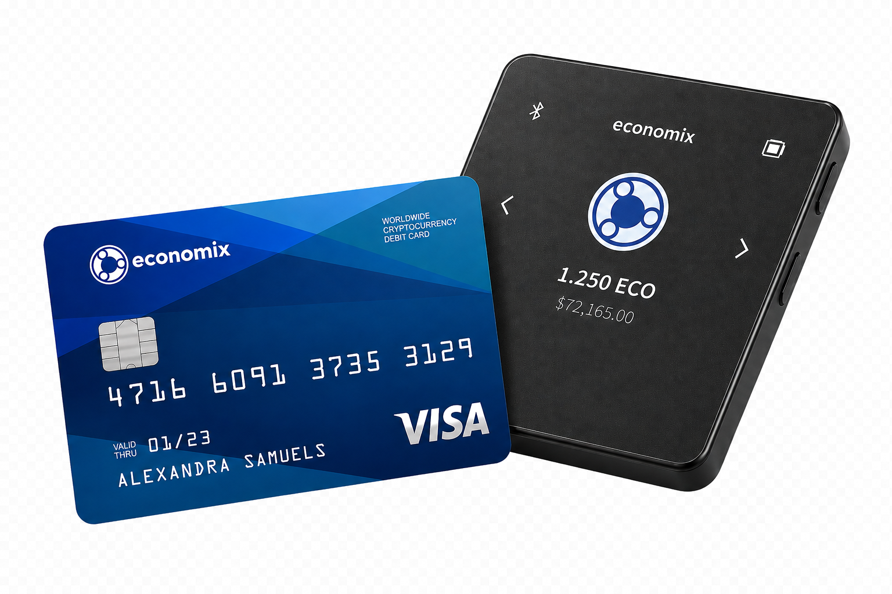
I led the entire project from vision to product - product design and UX architecture end to end, as an independent designer over a six-month engagement, specifying the platform's information architecture, designing every screen across four surfaces (the public rating site, the trading site, onboarding, and the trading platform itself), and leading and managing a team of two designers. I also partnered closely on product strategy and roadmap decisions.
Problem statement 01
No Reliable Signal
Evaluating an ICO or crypto asset meant trusting a handful of paid analysts or scattered social sentiment - there was no transparent, collective, accountable rating standard investors could actually check.
What is the problem?
Fragmented, low-trust asset evaluation
Who is effected?
Retail investors, independent analysts, new entrants
Why it's a problem:
High risk, missed opportunities on quality assets, no way to hold raters accountable
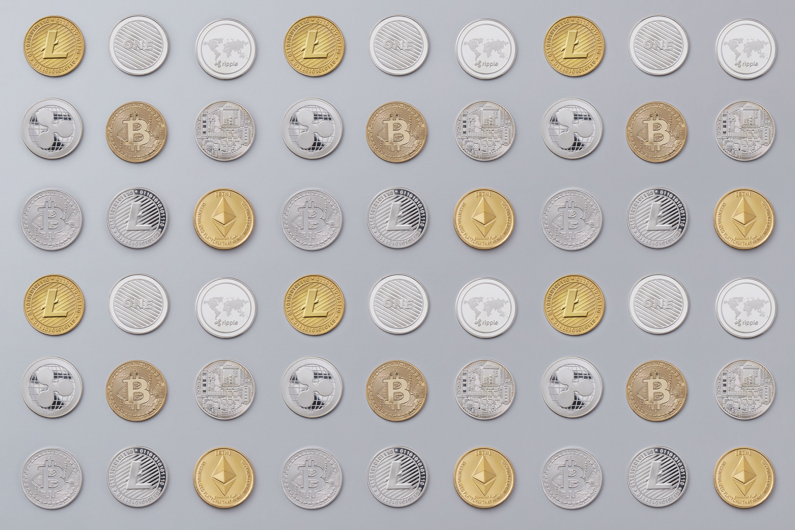
Problem statement 02
Compliance vs. Conversion
How much a user can invest depends on how much of their identity they've verified - but KYC is exactly where users abandon signup. This tension between compliance and conversion isn't unique to Economix - it's a challenge every fintech product runs into - but the wizard still had to satisfy regulatory requirements without losing the casual investor at step one.
What is the problem?
Regulatory verification creates drop-off risk
Who is effected?
New users, compliance, growth
Why it's a problem:
Losing users at onboarding undermines the crowd the rating model depends on
Competitive Benchmarking
I went through the live apps of the closest existing players - Estimize, Augur, CIndicator - not their marketing pages, to see how they actually handled forecasting, rating and portfolio UX before designing our own.
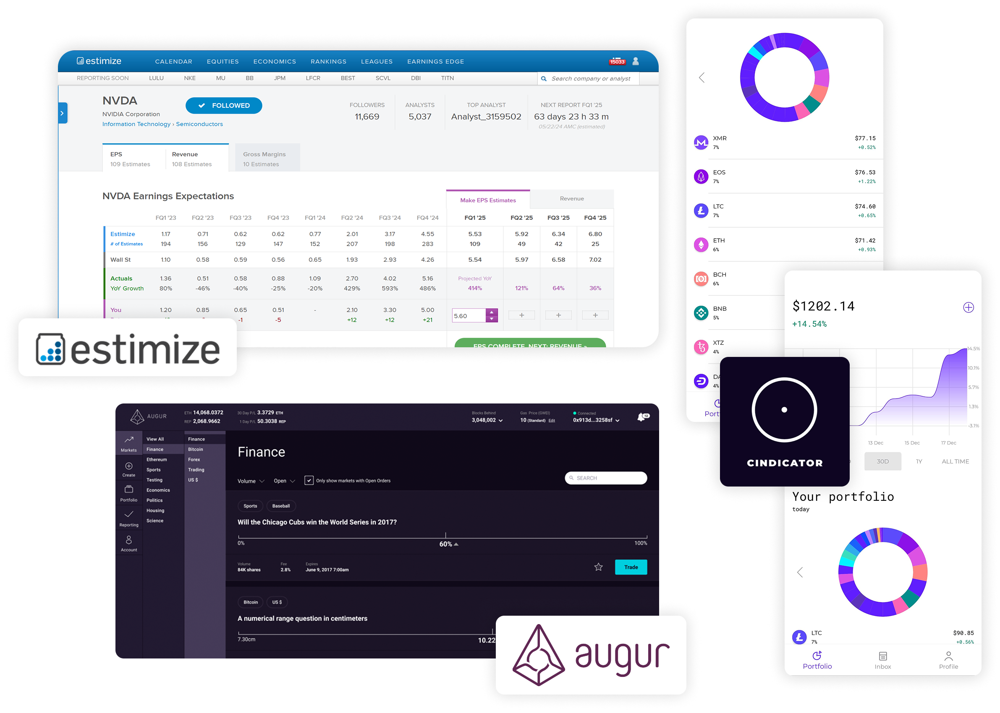
Finding 01
Reputation Next to DataFollowers and track record shown right next to the estimate - not buried in a separate profile.
Finding 02
Sliders Are Too BluntFast to grasp, but too binary for a multi-criteria project rating.
Finding 03
Portfolio-First HomeAllocation, live assets, performance - makes a forecasting tool feel like somewhere you'd actually return to.
Motivation Research
Knowing how rating apps work wasn't enough - I needed to know what actually gets someone to rate, forecast, or invest in the first place. Behavioral finance research on crypto markets points to one answer: it's rarely analysis. It's the live price board itself.
"...it is mainly individual investors who make decisions under the influence of emotions, not guided by rational analysis."
"Cryptocurrencies' prices are driven by herding... prices 'as-is' are the coordination mechanism."
Poyser Calderón, O. (2018) - Universitat Autònoma de Barcelona
"84% of investors make their investment decisions based on the fear of missing out (FOMO)." (n=1,248 crypto holders)
What this proves: people don't act because they analyzed - they act because they saw the price move, and saw everyone else moving with it. The live number is the trigger, not a rational read of the fundamentals.
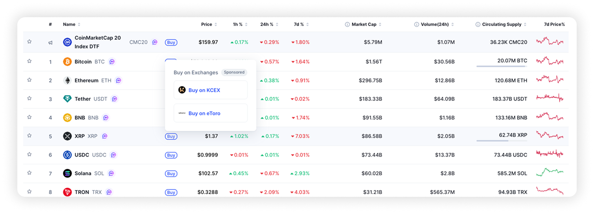
My clearest real-world reference for this was CoinMarketCap itself - a live, public ranking table is the trigger, not a landing page pitch.
This is why the discovery homepage leads with a live, public ranking table instead of a marketing pitch - the price movement itself is what gets someone to act, so the product has to earn that moment before it ever asks for a signup.
Step 01
With three different user actions feeding one reward economy, the real design problem wasn't the screens - it was the data model underneath them: what an action targets, what it produces, and how that loops back into who gets followed. I mapped this out before designing a single screen, and it drove every decision that came after it.
Three tiers - up to $15K, $50K-$1M, or $1M+ - set how much a user can invest.
Rate or forecast - and build a portfolio either way. Four roles feed this one economy: Rater, Forecaster, Portfolio Builder, and Moderator, who reviews the ratings other users submit.
Crypto, stock, ICO, IPO, or startup - one asset record.
Every rate and forecast measured against the real outcome.
Accuracy becomes reward tokens and leaderboard rank.
Step 02
Before signing up, anyone can browse live project rankings, prices and scores. The homepage doubles as both marketing and product - it's the trust-building layer that gets people to create an account.
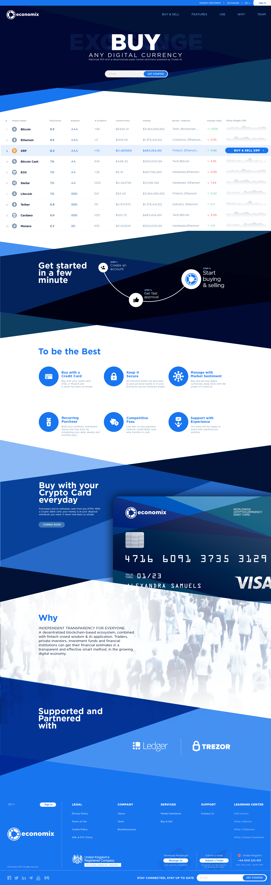
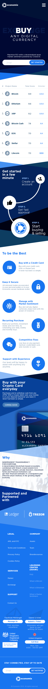
Step 03
Creating an account is only step one - how much a user can actually invest depends on how far they go through identity verification (three tiers: up to 15K, up to 50K, up to 1M). I designed the full multi-step wizard, balancing regulatory requirements against drop-off.
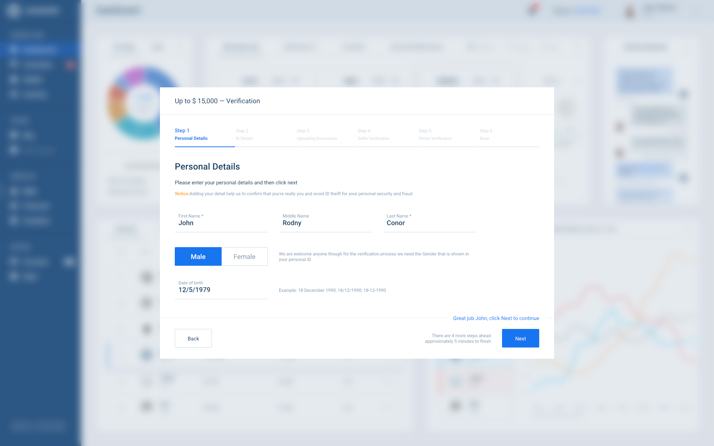
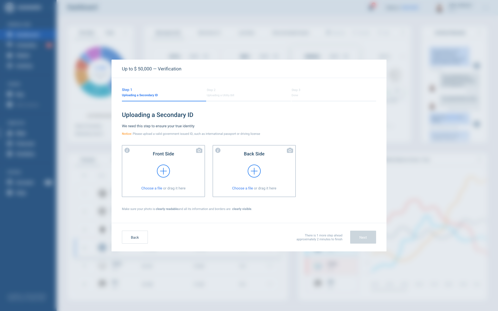
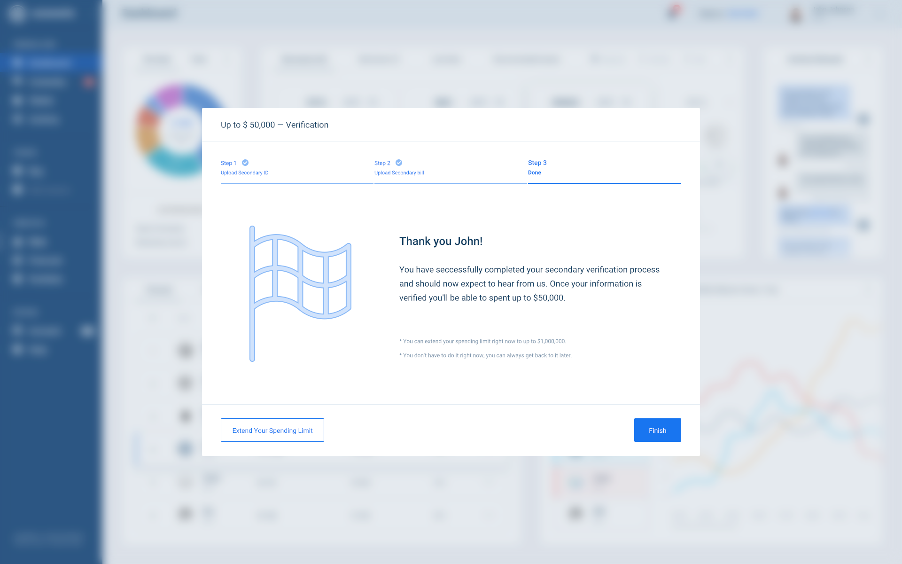
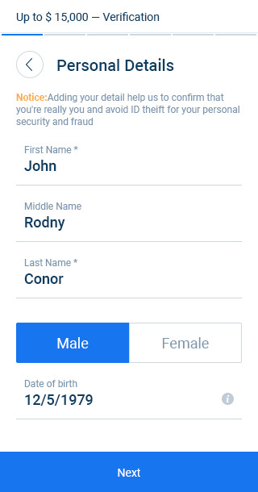
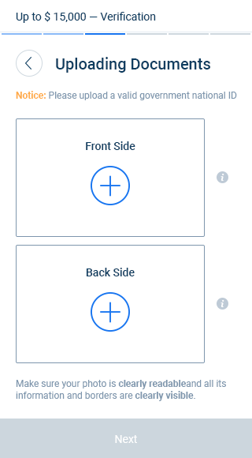
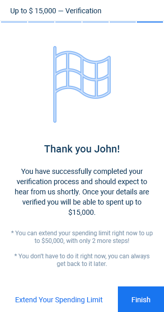
Step 04
Every Rate or Forecast starts here - a filterable list of every asset, by category, score, and criteria. This is the jumping-off point for both actions.
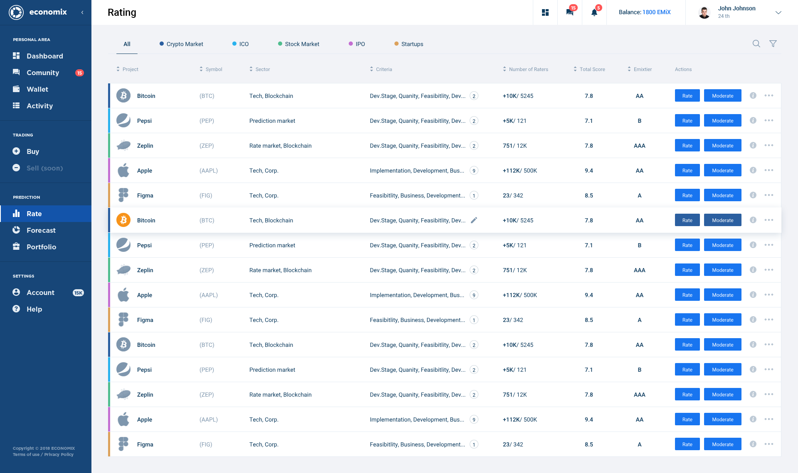
They aren't the same action - each one is its own flow, targeting a completely different thing.
Scores a project's underlying quality - team, tech, tokenomics - against fixed criteria, one at a time, until every criterion has a number behind it.
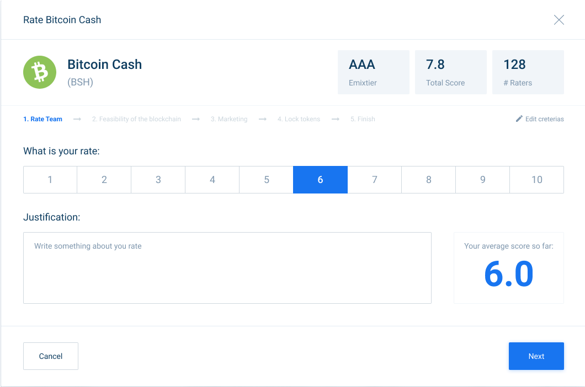
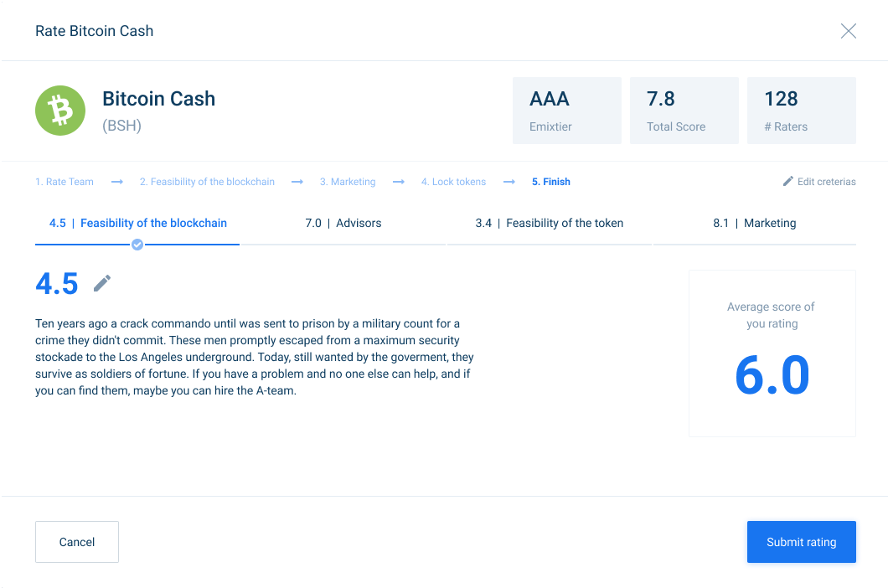
Predicts where the asset's real, tracked price will actually move by a set date - checked later against an outside oracle (CoinMarketCap), not against opinion.
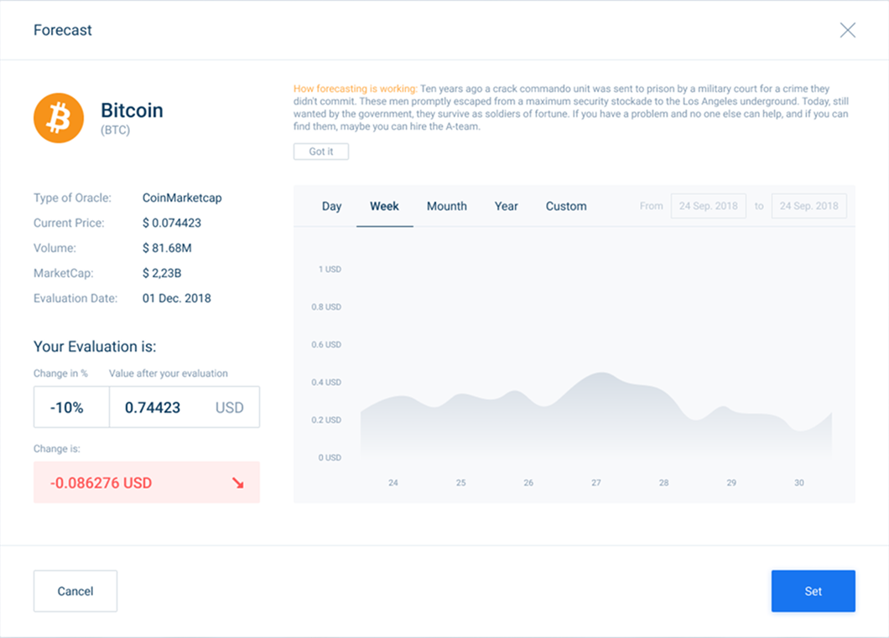
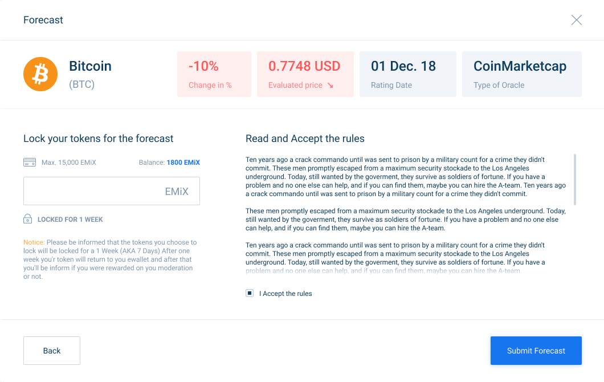
Step 05
Every rated asset - crypto, stocks, ICOs, IPOs, or startups - gets its own page with a live price chart, community rating, and a feed of what raters are actually saying.
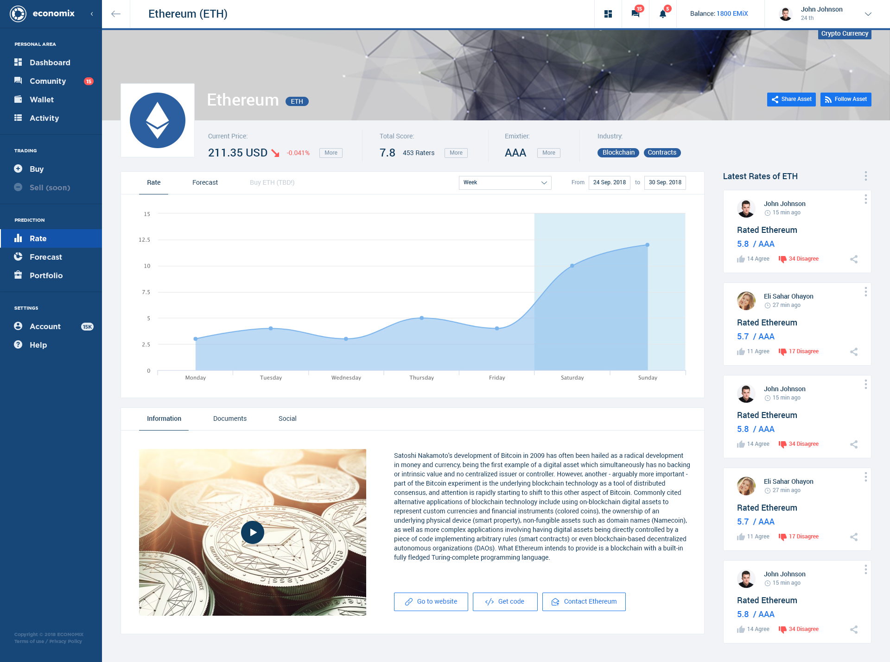
Step 06
Once inside, the dashboard is home base - assets, open events, forecast accuracy, and contribution points, all in one modular view.
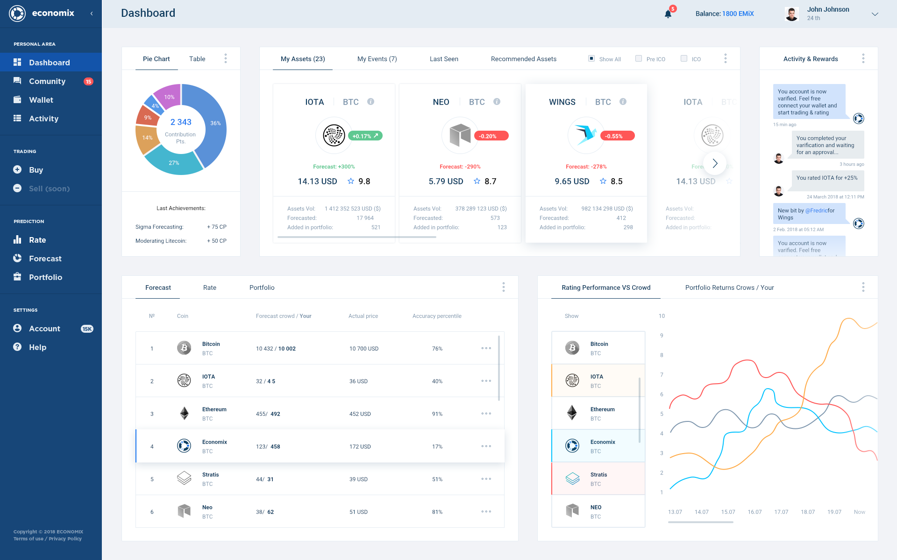
Step 07
Users follow top raters and forecasters, see leaderboards ranked by real accuracy and ROI, and grow their own reputation as their followers grow.
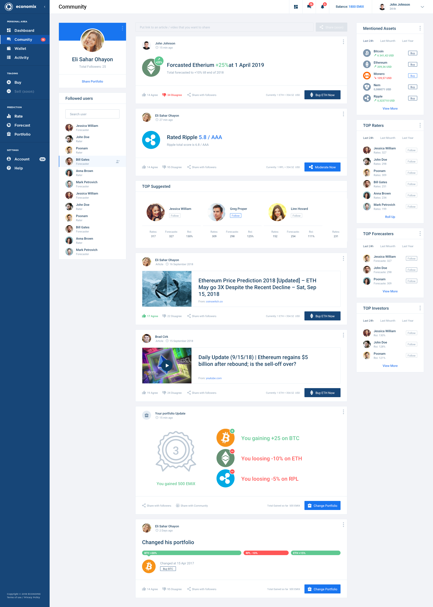
01
Full product built from the ground up
82
Foundational Components in the Design System
7
End-to-End User Flows
74+
Production-ready screens, built from 13 reusable layouts